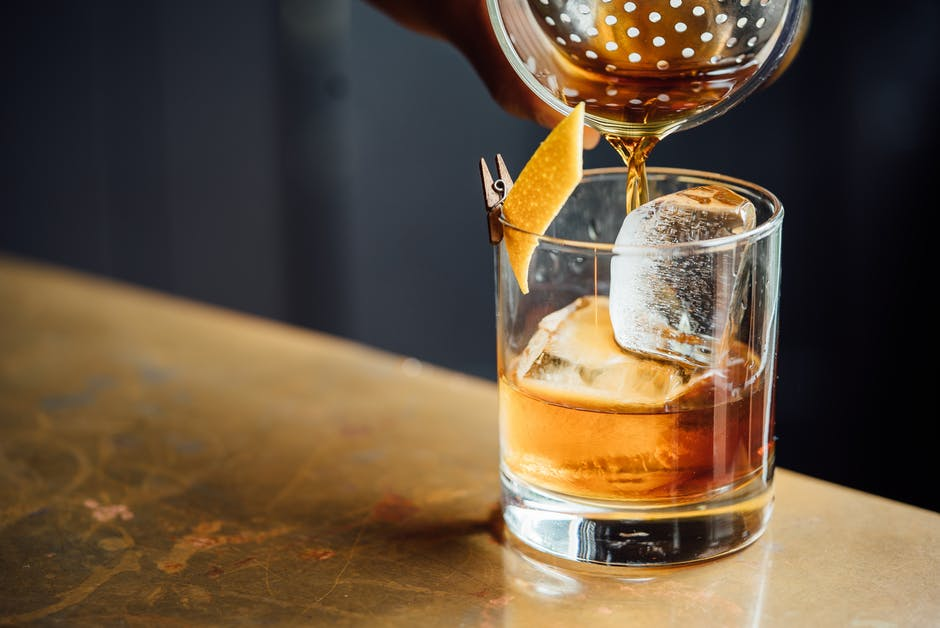
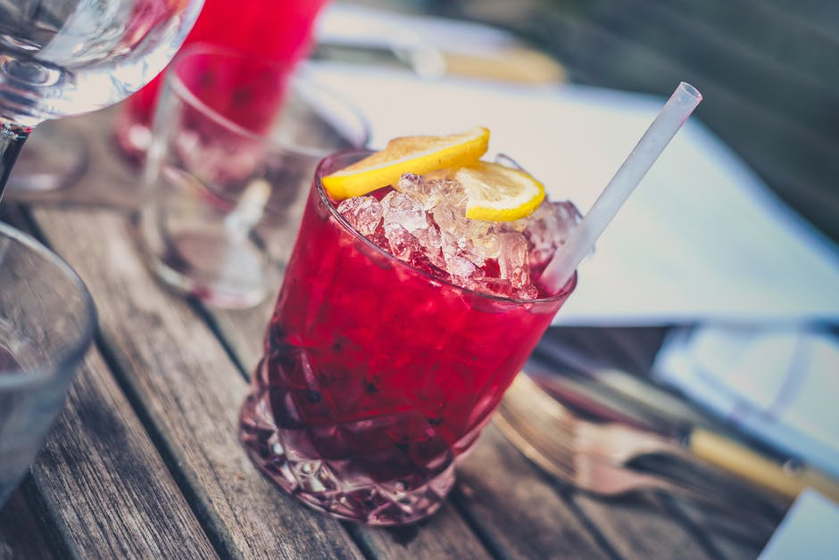
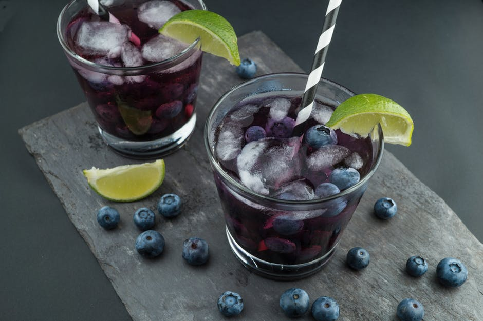
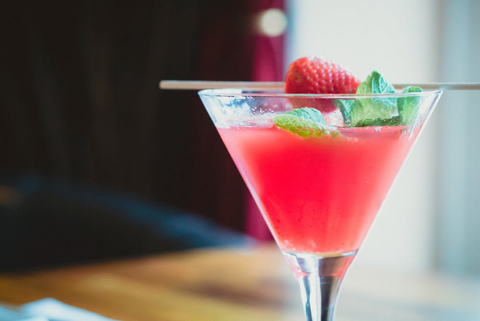
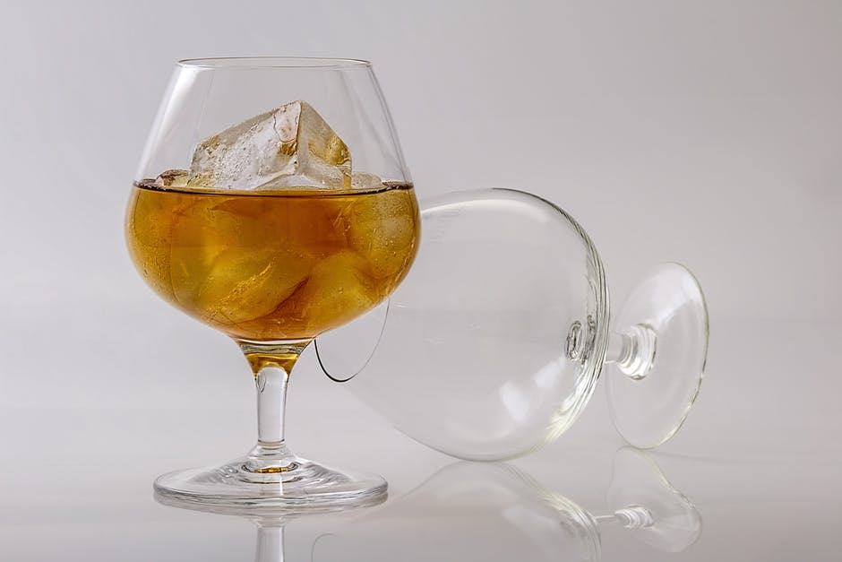
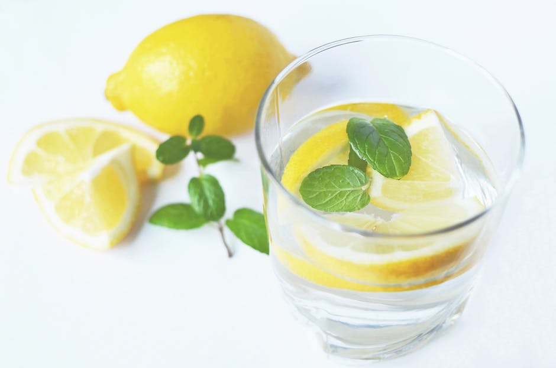

Kitchen is a special place in our home, usually with positive associations. This is where family ties and friendship grow. This is where our children learn about the secrets of preparing meals that they will later pass on to their successors. However, the 21st century is governed by its own laws. The food industry has caught our palate, making us more and more likely to reach for ready-to-eat dishes that are enough to put in the microwave. And these extremely comfortable products ruin our health.
DRINKS
See how to make delicious drinks yourself at home. Discover the recipes of the most exotic alcoholic cocktails and taste in non-alcoholic drinks. We present recipes of the finest, most famous drinks and those that have not yet conquered the world, and are regional delicacies. We talk about alcohol, which can only be bought in exclusive bartending shops, or abroad. All this for you, so that you can enjoy your senses with the best combination of taste, smell and appearance.






JUNK FOOD
Do not have time? Looking for rules for beginners? Do not you want to spend a fortune? Here you will find recipes for simple cakes, doughs that you prepare quickly, and also cheap recipes for inexpensive pastries.
CAKES
Fast Slow Food - What does this mean? This is a bunch of words from two seemingly mutually exclusive trends. I decided to choose from both of the best. Fast Food - Fast food, usually bought ready or in semi-finished form, quick to prepare, usually poor quality, consumed by children / young / older and overworked / lazy people. Junk food and junk eating. Slow Food is a global movement promoting traditional, regional and healthy cuisine. For me Slow Food is also the way we look at food: good quality products, local and seasonal products, traditional production methods, food for pleasure, meal celebration, nice time with loved ones. Fast Slow Food is an attempt to reconcile the fast-paced, urban life with the idea of conscious enjoyment of the culinary world. Good and inexpensive products, fast recipes, and finally a good time.